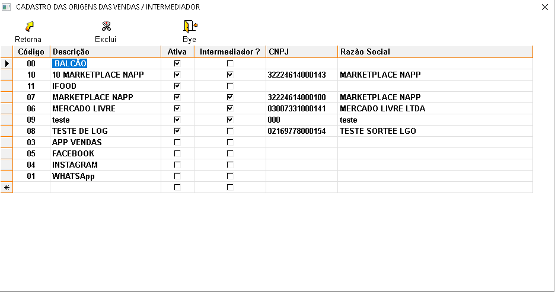

Imagine que você tem uma loja que vende produtos por diferentes canais, como uma loja física, um site, aplicativos e até mesmo através de outras plataformas como o Mercado Livre. Essa tabela serve para registrar e organizar todos esses canais de venda. Ela funciona como um cadastro onde você anota todas as formas que os clientes podem comprar seus produtos. Aperte no topico que deseja para conhecer a funcionalidade de cada opção.
+Qual o procedimento para cadastrar uma origem de vendas?
No sistema:
- Selecione a linha que está em branco, preencha com os dados pertinentes à origem de venda e tecle ENTER até a próxima linha para salvar.
+Como alterar os dados de uma origem de venda?
- Selecione a origem de venda, faça as alterações e tecle ENTER até a próxima linha para salvar.
+É possível excluir uma origem de venda?
- Sim, mas deve-se atentar aos seguintes detalhes:
- Se existirem vendas vinculadas a essa origem de venda, a exclusão não será permitida.
+Descrição dos campos:

- Código:Um número único atribuído a cada origem de venda, utilizado para identificação interna.
- Descrição:Um nome descritivo que identifica a origem da venda (ex: Balcão, Ifood, Marketplace).
- Ativa:Um campo que indica se a origem está ativa ou inativa. Se estiver ativa, as vendas provenientes dessa origem serão registradas no sistema.
- Intermediário?:Indica se a venda é realizada através de um intermediário, como um marketplace.
- CNPJ:O número de Cadastro Nacional da Pessoa Jurídica do intermediário, caso exista.
- Razão Social:O nome completo da empresa intermediária.